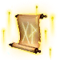

Эффект Опыта Альт
Предметы / Разное
Открыть в интерактивной вики →
Описание
Бонусный опыт в виде постоянного эффекта для персонажа, который его приобрел. Распространяется на все виды получения опыта. Процент бонуса равен половине самого высокого уровня персонажа на учетной записи. Для нечетного числа значение округляется в меньшую сторону.
Продолжительность: 7 дней.
Продолжительность: 7 дней.
- Условия покупки и активации:
- - минимум 3 уровень персонажа
- - минимум 50 уровень основного персонажа
- - максимум 90% уровня основного персонажа
Стоимость
30  Платина
Платина
Платина